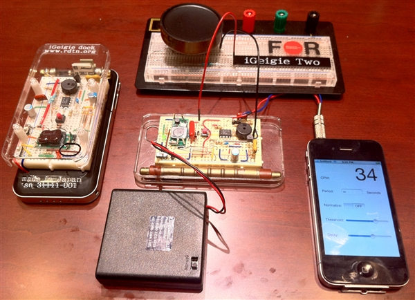

Во име на #хаклаб
за МетеоКутии
@gdamjan @2cmk
Јас сум @gdamjan, член @2cmk
а ќе зборам во име на скопскиот хаклаб
ќе зборам за реален, опиплив активизам.
но прво сакам да раскажам една инспиративна приказна
11 март 2011
приказната почнува пред 2 години
втора најголема нуклеарна катастрофа во историјата
ок, претерувам со сликата
11 март 2011
Земјотрес, Цунами, водата ги изгаси генераторите,
без ладење јадрата на 3 реактори почнаа да се топат
институциите потфрлиле, и не можело да им се верува
низа на грешки
ненавремено реагирале
Најголемиот проблем после ваква хаварија е ширењето на радиоактивни честици
(цезиум, јод) носени од водата и ветер.
неточни мерења
криеле податоци
не постоеле редовни мерења за да се спореди „нормалната“ состојба
луѓето почнале да бараат да купат мерачи на радијација - немало.
пазарот не бил спремен за таква побарувачка
хакерите се собрале да направат свој систем
америка, австралија, токио hackerspace и други низ светот
низ неколку итерации успеваат да го направат системот за мониторинг на
радиоактивност, прават сајт на кој се ажурираат и следат мерењата,
прават ефтини уреди за мерење, ги дистрибуираат низ светот за да може
да се види и нормалната состојба

јавно објавен хардвер, софтвер, податоци
главниот конкурент, 100 кила, милион долари
moral of the story
институциите се тромави
многу пати граѓаните можат побрзо да се прилагодат на ситуацијата и нивните интереси
хакерите се тие кои се доволно луди, способни и на маргините за да го направат тоа
драматична пауза? :) (празен слајд)
но да се вратиме во Македонија
- во меѓувреме гледајте го http://www.youtube.com/watch?v=Sdlha6H5s6E
веќе 3 години постои хаклаб КИКА,
само финансиран простор (донации)
се занимаваме со разни ствари
за забава или знаење… многу ретко за профит (да не речам никогаш)
хакери, го спомнав повеќе пати, се луѓе кои си ја наоѓаат среќата во животот
растурајќи ги саатите по дома, чепкајќи технологија,
Хаклабите или Hackerspaces се место каде што хакерите можат заедно да работат и да си помогнат
да најдат заеднички ресурси и простор
(празен слајд)
но да се вратиме во Скопје
екоинформатика
екран на ул. Македонија
сајт со слики (useless за data - scientists)
само една точка на мерење (или мал број)
во еден момент дури и сајтот престанува да работи, поради којзнае кои причини.
.. приватна фирма не сака да го одржува, градот не сака да го спонзорира... бла бла
неколку месеци greenbox оди на ул. Македонија и со телефон го слика панелот.
и така си седиме ние … и си викаме, ова е премногу неефикасно
мора да постои бољи начин
дај да видиме како и што може да се направи со тоа што го имаме
и така се роди идејата за метео кутија
ефтина
off-the-shelf
секој да може да ја направи и уклучи
слободен хардвер, документирано, reproducible
нашиот идеја е дека граѓаните не мора и не треба за сѐ да чекаат на институциите
и преку слободен проток на знаење можат самите да си ги решаваат проблемите од секојдневието
технологијата може да помогне во тоа, но слобода на знаењето е неопходен услов
се надевам дека во иднина ќе може сами да го проверуваме квалитетот на храната и водата, зошто да не.
почеток!
(дискусија)
за engage нема доволно време да се прави работилници со деталите
повелете во хаклаб КИКА